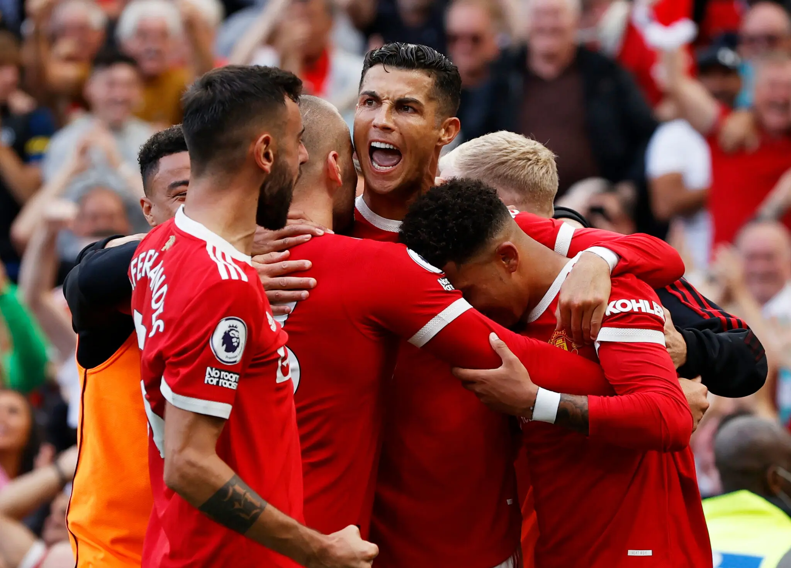
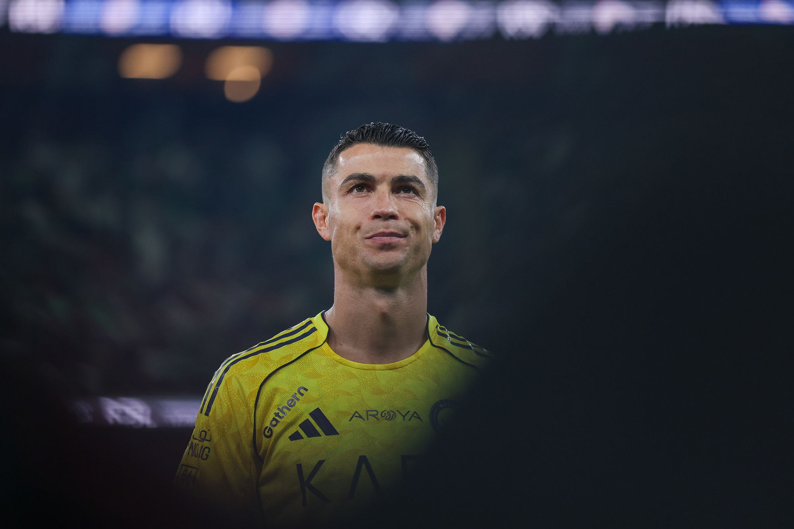
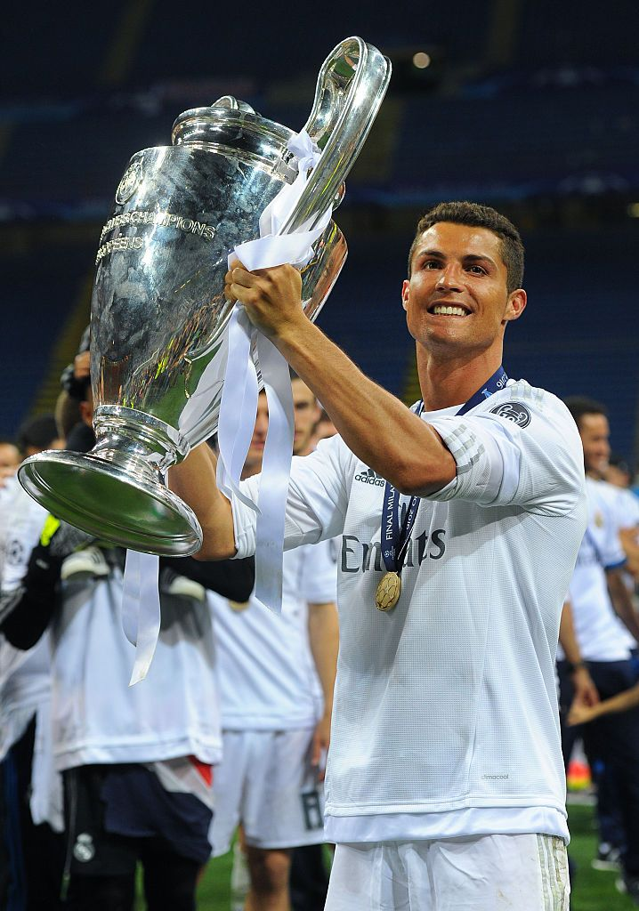
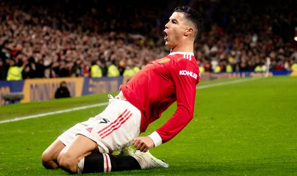
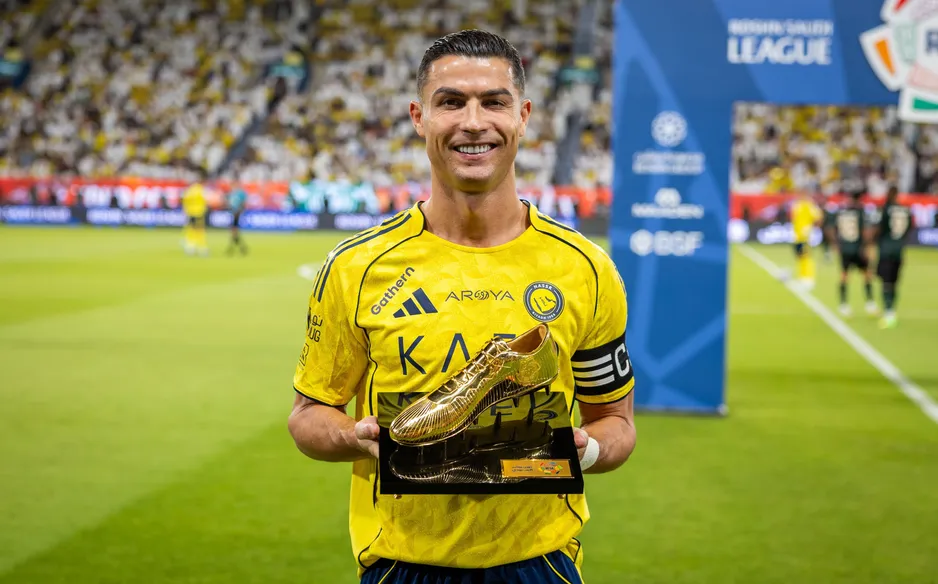

Born on February 5, 1985, in Funchal, Madeira, Portugal, Cristiano Ronaldo dos Santos Aveiro rose from humble beginnings to become one of the greatest footballers ever. Discovered by Sporting CP at 12, he made his senior debut at 17.
Ronaldo's ethic is legendary: he trains harder, jumps higher (record vertical leap 78cm), and scores relentlessly. Off-pitch, he's a father of 5, entrepreneur (CR7 brand), and philanthropist donating millions to hospitals and disaster relief.
Nicknamed 'CR7', his mental strength shines in comebacks and clutch moments, embodying "Siuuu!" celebration worldwide.
Career Goals
Ballon d'Or
UCL Titles
Int'l Goals (Record)
Major Trophies
Club Goals






| Record | Achievement |
|---|---|
| All-time UCL Top Scorer | 140+ goals |
| Most Int'l Goals | 133 |
| Most UCL Hats-tricks | 8 |
| Fastest to 100 UCL Goals | 3 yrs |
"Your love makes me strong. Your hate makes me unstoppable."
— Cristiano Ronaldo
"Talent without working hard is nothing."
— Cristiano Ronaldo